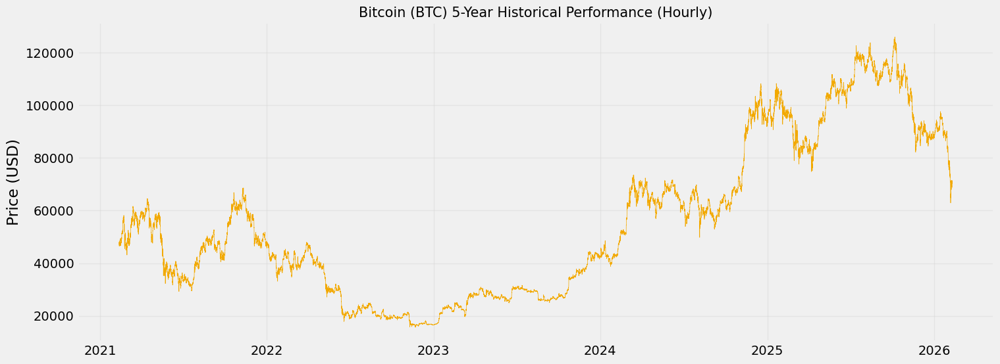
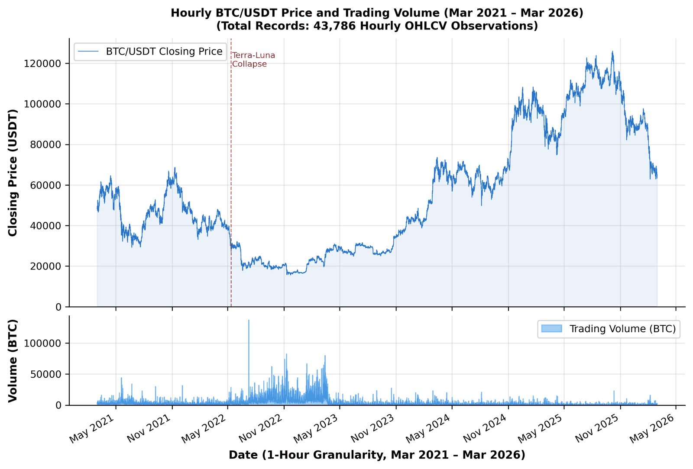
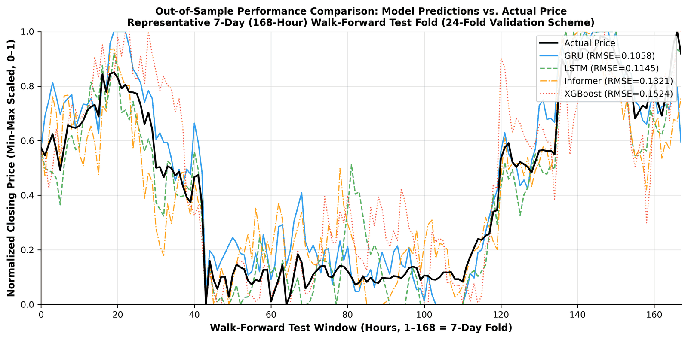

A Deep Learning Architecture for Cryptocurrency Price Forecasting Utilizing Business Intelligence
Kerangka kerja Business Intelligence & Machine Learning (BI-ML) 4 lapis yang membandingkan XGBoost, LSTM, GRU, dan Informer pada 43.786 data harga Bitcoin per jam, lalu mengubah hasil prediksinya menjadi sinyal beli/jual, Sharpe Ratio, dan Value-at-Risk di dashboard Power BI untuk membantu pengambilan keputusan investasi.
Siapa di Balik Penelitian Ini?
Asep Surahman Sulaeman
Membangun model deep learning untuk data harga per jam, mengolah data bursa kripto, dan memastikan sinyal bebas bocoran data masa depan.
Dr. Deden Witarsyah
Ahli Sistem Pendukung Keputusan (DSS), Business Intelligence, dan pengujian kemudahan sistem (SUS).
Dr. Aswan Supriyadi Sunge
Ahli optimasi machine learning, data deret waktu keuangan, dan uji statistik pembanding model.
Tentang penelitian
Hasil penelitian ini juga ditulis sebagai makalah konferensi format IEEE (6 halaman) dengan 49 referensi internasional (IEEE, ScienceDirect, Springer, MDPI). Seluruh eksperimen bisa diulang di laptop biasa (CPU Intel Core i7-1260P) tanpa GPU khusus.
Sasaran kontribusi: menjembatani model AI di laboratorium dengan dashboard yang dipakai industri, menjelaskan mengapa model dengan error terkecil belum tentu paling untung, dan memberi cetak biru sistem pendukung keputusan bagi manajer investasi. Kode dan data olahan tersedia dari penulis korespondensi atas permintaan yang wajar.
Apa yang Akan Saya Sampaikan?
Penelitian Ini dalam 4 Angka
Penjelasan
Cara membaca angka di atas: harga Bitcoin dicatat setiap jam selama 5 tahun (43.786 data). Model tidak hanya diuji sekali, tetapi 24 kali di periode pasar yang berbeda agar hasilnya tidak kebetulan.
57,8% artinya dari 100 kali menebak harga akan naik atau turun, model LSTM benar sekitar 58 kali, di atas tebakan acak (50%). Sharpe 0,87 adalah untung per unit risiko yang disetahunkan, dihitung sebelum biaya transaksi. SUS 86,4 berarti 15 evaluator menilai dashboard-nya sangat mudah dipakai.
Temuan utama: model yang paling presisi menebak angka (GRU, RMSE 0,1058) ternyata bukan model yang paling menguntungkan untuk keputusan investasi (LSTM). Artinya, ukuran error seperti RMSE saja tidak cukup untuk menilai manfaat model.
Harga Bitcoin Naik-Turun Ekstrem

Penjelasan
Bursa saham seperti BEI punya jam buka-tutup dan libur akhir pekan, tetapi pasar kripto berjalan terus 8.760 jam setahun. Harganya bisa melonjak atau anjlok tajam dalam waktu singkat, kondisi pasar bisa berganti mendadak (regime switching), dan pola lama cepat tidak berlaku lagi (istilahnya non-stasioner).
Kenapa model klasik kesulitan? Model statistik seperti ARIMA menganggap pola data stabil dan hubungannya lurus (linier). Asumsi ini sering dilanggar oleh data kripto, sehingga dipakai deep learning dan tree-based ensemble yang mampu menangkap pola tidak linier dari banyak fitur sekaligus.
Akibatnya keputusan manual mudah dipengaruhi emosi: panik menjual saat harga turun, atau ikut-ikutan membeli (FOMO) saat harga naik. Karena itu dibutuhkan sistem pendukung keputusan berbasis AI yang objektif dan bisa mengukur risikonya.
Analogi: memprediksi kripto seperti menembak target di tengah badai, targetnya bergerak dan anginnya berubah terus. Model yang hanya menghafal masa lalu pasti meleset.
Apa yang Kurang dari Penelitian Sebelumnya?
Penelitian sebelumnya
Penelitian ini
Kenapa tiga hal ini penting?
1. Kebocoran data. Jika data diacak, saat belajar model ikut "melihat" harga masa depan. Hasilnya terlihat sangat akurat, padahal di dunia nyata masa depan tidak bisa dilihat.
2. Error kecil belum tentu untung. Investor dan komite risiko perlu tahu arah harga (naik/turun), kerugian terburuk, dan untung per risiko, bukan hanya selisih angka. Studi terdahulu juga tidak sepakat model mana yang terbaik (ada yang memenangkan LSTM, GRU, CNN, atau boosting), dan hanya sedikit yang menghubungkan prediksi dengan hasil trading.
3. Tidak sampai ke pengguna. Sepengetahuan kami, studi sebelumnya berhenti di perbandingan model dan backtest, tanpa menjelaskan bagaimana hasilnya sampai ke praktisi lewat sistem pendukung keputusan yang diuji oleh pengguna. Penelitian ini menghubungkannya ke database PostgreSQL dan dashboard Power BI.
3 Hal yang Ingin Dicapai
Membangun Sistem
Pipeline 4 tahap dari data mentah Binance sampai dashboard, tanpa kebocoran data.
Membandingkan Model
Menguji 4 model AI dari dua sisi: ketepatan angka dan keuntungan keputusan.
Menyajikan untuk Pengguna
Dashboard Power BI yang mudah dipahami, lalu diuji oleh 15 evaluator.
Intinya: 4 kontribusi penelitian
(i) Membandingkan XGBoost, LSTM, GRU, dan Informer dengan satu protokol yang sama: 24 kali uji walk-forward berurutan waktu pada 5 tahun data BTC/USDT per jam, dengan skala per periode (fold-local).
(ii) Menguji perbedaan akurasi secara statistik (Kruskal-Wallis, Diebold-Mariano), lalu membandingkannya dengan akurasi arah, Sharpe Ratio, dan VaR.
(iii) Memasukkan hasilnya ke pipeline BI-ML 4 lapis (PostgreSQL Data Mart + Power BI) yang kemudahannya diukur dengan SUS.
(iv) Melaporkan metrik keuangan sebelum biaya transaksi secara terbuka, dan menjadikan perhitungan setelah biaya sebagai batas utama klaim ekonomi penelitian ini.
Sistem Bekerja dalam 4 Tahap
Ambil Data
Harga BTC per jam dari Binance, dibersihkan & dicek
43.786 data jamOlah Fitur
Hitung 15 indikator teknikal (RSI, MACD, dll.)
15 fiturLatih Model AI
XGBoost, LSTM, GRU, Informer diuji 24 kali
Prediksi 7 hariDashboard BI
Prediksi diubah jadi sinyal & risiko di Power BI
Refresh 1,2 detikPenjelasan
Bayangkan seperti dapur restoran: Layer 1 menyiapkan bahan (mengambil dan membersihkan data), Layer 2 meracik bumbu (menghitung indikator), Layer 3 memasak (melatih model AI), dan Layer 4 menyajikan ke meja (dashboard untuk pengambil keputusan).
Hasil tiap tahap langsung menjadi bahan tahap berikutnya, sehingga sistem berjalan otomatis dari data mentah sampai rekomendasi keputusan. Secara teknis: (1) ambil data & cek stasioneritas; (2) hitung fitur dengan skala per fold agar tidak bocor; (3) optimasi hyperparameter & prediksi out-of-sample keempat model; (4) ubah prediksi jadi sinyal, Sharpe, dan VaR, lalu kirim ke Power BI lewat DirectQuery.
5 Tahun Data Bitcoin per Jam

Penjelasan
Apa itu uji ADF? Augmented Dickey-Fuller adalah uji statistik untuk mengecek apakah pola data stabil. Harga mentah Bitcoin tidak lulus (polanya terus berubah), sehingga yang dipakai model adalah perubahan harga, bukan harga mentahnya. Setelah itu semua data lulus uji di 24 periode.
Data rusak: 5 tahun seharusnya 43.824 jam; 38 jam tanpa transaksi (volume nol, harga Open = High = Low = Close) dibuang, kurang dari 0,01% data, tanpa diganti dengan data karangan. Keutuhan data dijaga dengan kode pengecek SHA-256.
Kenapa BTC/USDT? Bitcoin adalah aset acuan di literatur prediksi kripto, diperdagangkan 24/7 tanpa jeda, dan pasangan BTC/USDT di Binance sangat likuid, sehingga hasilnya mencerminkan kemampuan model, bukan gangguan karena pasar sepi seperti pada koin kecil.
15 Indikator Teknikal dalam 4 Kelompok
Tren
Ke mana arah harga?
Momentum
Seberapa kuat dorongannya?
Volatilitas
Seberapa liar gejolaknya?
Volume & Konvergensi
Seberapa ramai transaksinya?
Penjelasan
Indikator teknikal adalah rumus dari harga dan volume yang biasa dipakai trader. Contoh: RSI menunjukkan apakah harga sudah "terlalu tinggi" atau "terlalu rendah"; MACD menunjukkan perubahan arah tren; Bollinger Bands dan ATR mengukur seberapa liar harga bergerak; OBV melihat apakah kenaikan harga didukung banyaknya transaksi.
Setiap kali menebak, model melihat 24 jam terakhir × 15 indikator (sebuah tabel 24 × 15), lalu memperkirakan harga berikutnya. Log return hanya dipakai di dalam perhitungan (untuk volatilitas 24 jam dan uji ADF), bukan sebagai fitur tersendiri. Fitur yang bergantung pada level harga (EMA, ATR, OBV, volatilitas) diambil selisihnya dulu agar stabil.
Model Tidak Boleh Mengintip Masa Depan
Contoh sederhana
Contoh: harga BTC terendah sekitar 16.800 USD (Nov 2022), sedangkan tertinggi sekitar 126.000 USD (Okt 2025). Jika skala dihitung dari seluruh data, model yang belajar di 2022 sudah "tahu" harga nanti bisa sampai 126 ribu. Itu bocoran masa depan.
Di penelitian ini skala hanya dihitung dari 720 jam data latih, lalu dipakai apa adanya untuk 168 jam data uji. Konsekuensinya, RMSE dan MAE dilaporkan pada skala 0–1 per fold dan tidak bisa langsung diubah ke USD, serta metrik MAPE tidak dipakai karena pada skala ini persentasenya tidak bermakna.
Fitur Apa yang Paling Berpengaruh?
Kontribusi fitur terhadap prediksi GRU (nilai SHAP)
Penjelasan
SHAP adalah metode untuk "membuka kotak hitam" AI. Cara kerjanya mirip membagi skor kemenangan tim ke setiap pemain: dihitung seberapa besar setiap fitur ikut menentukan hasil prediksi.
Di semua model, ukuran volatilitas dan momentum paling dominan. Volatilitas 24 jam selalu berada di peringkat pertama, dengan porsi sekitar 23% dari total kontribusi pada model GRU, disusul RSI dan MACD. Volume (OBV) membantu terutama saat harga menembus level penting. Artinya model bekerja masuk akal, sesuai cara analis teknikal membaca pasar.
Diuji 24 Kali Sepanjang 5 Tahun
Penjelasan
Cara kerjanya: model belajar dari 30 hari data, lalu diuji menebak 7 hari berikutnya yang belum pernah dilihat. Jendela kemudian digeser maju sekitar 78 hari (1.865 jam) dan diulang, total 24 kali. Seluruh jam uji (4.032 jam) setara 9,2% dari dataset, dan tidak ada jendela uji yang tumpang tindih.
Dengan begitu model diuji di kondisi pasar yang berbeda-beda: naik tajam (2021), jatuh (2022), stagnan (2023), halving (2024), hingga rekor tertinggi (2025). Cara ini meniru pemakaian nyata: selalu belajar dari masa lalu untuk menebak masa depan. Cara acak (random K-fold) tidak dipakai karena memakai data masa depan untuk menebak masa lalu.
4 Model yang Dibandingkan
XGBoost
Kumpulan 300 pohon keputusan
LSTM
Memori panjang dengan 3 "gerbang"
GRU
Versi ringkas LSTM, 2 "gerbang"
Informer
Mekanisme "attention" modern
Penjelasan
XGBoost mewakili machine learning klasik yang populer, tetapi membaca data seperti tabel biasa tanpa memperhatikan urutan waktu. LSTM dan GRU adalah jaringan saraf yang dirancang untuk data berurutan seperti harga per jam.
LSTM memakai 3 "gerbang" (lupa, masuk, keluar) untuk mengatur memori; GRU menyederhanakannya jadi 2 gerbang sehingga parameternya lebih sedikit (154.881 vs 206.465). Informer adalah Transformer modern yang memilih momen terpenting dengan "ProbSparse attention", sehingga hitungannya lebih ringan (dari O(L²) ke O(L log L)). Di sini Informer dilatih murni dari nol tanpa pre-training dengan input tetap 24 jam, yang mungkin ikut menjelaskan error-nya lebih tinggi.
Penyetelan: XGBoost dipilih lewat Grid Search berurutan waktu (TimeSeriesSplit, 5 bagian); arsitektur neural dipilih dari error validasi terkecil. Semua dilatih di laptop biasa (CPU Intel i7, tanpa GPU) dengan pengaturan sejenis agar adil.
Prediksi Diubah Menjadi Sinyal Beli / Jual
Prediksi
Model menebak harga 7 hari ke depan
Sinyal
Naik → Beli (+1)
Turun → Jual (−1)
Hasil
Hitung untung / rugi dari sinyal tersebut
Dashboard
Ditampilkan di Power BI
Directional Accuracy
Berapa persen arah naik/turun yang ditebak benar
Sharpe Ratio
Untung per unit risiko, semakin tinggi semakin baik
VaR 95%
Batas rugi terburuk per jam (95% kasus)
Penjelasan
Cara kerja: di awal setiap minggu uji, model membuat lintasan prediksi 168 jam sekaligus. Untuk tiap jam, jika prediksi jam itu lebih tinggi dari harga asli jam sebelumnya, sinyalnya Beli (+1); jika lebih rendah, Jual/lindungi (−1). Untung-rugi tiap jam = sinyal × perubahan harga sebenarnya.
Catatan penting ("stale forecast"): lintasan prediksi itu tidak diperbarui saat harga baru masuk, sehingga sinyalnya setara dengan pandangan arah mingguan, bukan strategi trading per jam yang siap dieksekusi. Sharpe Ratio disetahunkan dengan faktor √8760 (365 hari × 24 jam) dan bunga bebas risiko 2% per tahun; VaR 95% = persentil ke-5 return. Semua dihitung sebelum biaya (fee Binance 0,10% taker / 0,02% maker).
GRU Paling Presisi
Rata-rata error prediksi (RMSE) di 24 pengujian
Penjelasan
RMSE (Root Mean Square Error) adalah rata-rata besar selisih antara harga prediksi dan harga asli; makin kecil makin baik. GRU paling kecil (RMSE 0,1058; MAE 0,0948) dan paling konsisten di 24 pengujian (simpangan hanya ±0,0034). Urutan berikutnya LSTM (0,1145), Informer (0,1321), dan XGBoost (0,1524). XGBoost paling tertinggal dan paling lebar sebarannya karena pohon keputusan tidak membaca urutan waktu; attention pada Informer diduga peka terhadap "noise" gejolak per jam (dugaan ini belum diuji).
Baseline adalah pembanding sederhana: tebakan naif (harga terakhir diulang datar selama 7 hari) RMSE 0,2341, dan ARIMA(1,1,1) (model statistik klasik) 0,1987. Keempat model AI lebih baik dari keduanya.
Prediksi vs Harga Sebenarnya

Cara membaca grafik
Cara membaca: sumbu bawah adalah jam ke-1 sampai ke-168 (7 hari), sumbu kiri adalah harga yang sudah diskalakan 0–1. Garis hitam adalah harga sebenarnya.
Semakin dekat garis berwarna ke garis hitam, semakin baik prediksinya. GRU (biru) paling rapat mengikuti, sedangkan XGBoost (merah titik-titik) paling sering melenceng.
Apakah Keunggulan GRU Bukan Kebetulan?
Penjelasan
Uji statistik dipakai untuk memastikan perbedaan hasil bukan karena kebetulan. Kruskal-Wallis membandingkan keempat model sekaligus: p < 0,001 berarti hampir pasti ada perbedaan nyata.
Diebold-Mariano membandingkan dua model satu per satu. Karena ada 3 perbandingan, batas signifikansi diperketat dari 0,05 menjadi 0,0167 (koreksi Bonferroni). GRU vs LSTM p = 0,043: GRU sedikit lebih baik, tetapi selisihnya belum cukup kuat setelah batas diperketat.
LSTM Paling Menguntungkan
Tebakan arah benar (%)
Sharpe Ratio (untung per risiko)
Penjelasan
Akurasi arah: dari 100 tebakan naik/turun, LSTM benar sekitar 58 kali (57,8% ± 2,1%), GRU 55,3%, Informer 53,6%, XGBoost 51,4%. Pasar Bitcoin per jam dikenal cukup efisien (sulit ditebak), jadi selisih beberapa persen di atas 50% sudah bermakna.
Sharpe Ratio 0,87: untung per unit risiko LSTM lebih tinggi daripada sekadar membeli lalu menyimpan Bitcoin (0,58) atau model ARIMA (0,41). Hanya LSTM dan GRU yang mengalahkan semua pembanding; XGBoost dan Informer kalah dari beli-dan-simpan.
VaR 95% = −1,18% per jam: dalam 95% kondisi, kerugian per jam tidak lebih dari 1,18%. Ini paling aman dibanding XGBoost (−2,15%). Semua angka di sini sebelum biaya transaksi.
The Divergence Paradox: Dua Juara Berbeda
GRU
Seperti termometer super presisi: selisih angkanya paling kecil.
LSTM
Seperti navigator: paling tahu kapan harus belok naik atau turun.
Penjelasan
Kenapa bisa berbeda? GRU punya struktur gerbang yang ringkas (2 gerbang) sehingga sangat cocok menangkap gejolak jangka pendek dan menebak besar perubahan harga dengan tepat, tanpa parameter berlebihan seperti self-attention penuh.
LSTM menyimpan "memori jangka panjang" di sel memori terpisah (cell state), sehingga lebih kuat mempertahankan arah tren besar. Untuk keputusan investasi, ketepatan arah lebih menentukan daripada kecilnya selisih angka.
Hasil Disajikan di Power BI
Penjelasan
Alurnya: hasil prediksi, sinyal, dan untung-rugi disimpan ke database PostgreSQL. Power BI membaca database itu secara langsung (mode DirectQuery), sehingga angka di dashboard selalu terbaru tanpa impor ulang.
Isi dashboard: grafik harga asli vs prediksi, indikator Sharpe Ratio, peringatan batas risiko (VaR), dan rekomendasi posisi (Beli/Lindungi).
Cara pengujian prototipe (mengacu kerangka DSS Power dan Sharda dkk.): (1) kebenaran fungsi: data mengalir ke dashboard dengan refresh rata-rata 1,2 detik dan 43.786 baris masuk utuh; (2) kestabilan angka: Sharpe dan VaR di dashboard sama dengan hitungan Python (selisih maks. 0,003); (3) kemudahan pakai diuji dengan SUS (slide berikutnya).
Dashboard Mudah Digunakan
Penjelasan
SUS (System Usability Scale) adalah kuesioner standar 10 pertanyaan untuk mengukur kemudahan sebuah sistem, dengan skor 0–100. Setelah demo 30 menit, 15 evaluator mengisi kuesioner.
Rata-ratanya 86,4 (rentang 80–92), masuk kategori "Excellent" (di atas 85,5 menurut skala Bangor dkk.). Artinya evaluator bisa memahami sinyal dan risiko dari beberapa model tanpa harus mengerti kode programnya.
Catatan jujur: simpangan yang kecil (SD 3,2) kemungkinan besar karena latar belakang evaluator cukup seragam, sehingga hasil ini perlu dikonfirmasi dengan kelompok pengguna yang lebih beragam.
Posisi Penelitian Ini di Antara Studi Lain
| Studi | Model | Data | Arah Benar | Sharpe |
|---|---|---|---|---|
| Chen dkk. (2020) | LR, RF, XGBoost, SVM, LSTM | BTC harian & 5 menit | 66% – 67,2% | — |
| Omole & Enke (2024) | Boruta + CNN-LSTM | BTC + on-chain | 82,44% | — |
| Jaquart dkk. (2022) | LSTM, GRU ensemble | 100 kripto harian | 52,9% – 54,1% | 3,23 / 3,12 (net) |
| Bysik & Ślepaczuk (2026)* | XGBoost, LSTM, iTransformer | BTC 1 jam | — | > 1 (net) |
| Penelitian ini (GRU, RMSE terbaik) | GRU | BTC/USDT 1 jam, 24 fold | 55,3% | 0,72 ± 0,14 (gross) |
| Penelitian ini (LSTM, arah terbaik) | LSTM | BTC/USDT 1 jam, 24 fold | 57,8% | 0,87 ± 0,12 (gross) |
Penjelasan
Cara membaca: kolom "Arah Benar" adalah persentase tebakan naik/turun yang tepat (tanda "—" = tidak dilaporkan). Perbandingan ini hanya ilustrasi, karena aset, interval data, target, cara validasi, dan perlakuan biaya tiap studi berbeda. Akurasi arah penelitian ini (55,3–57,8%) lebih tinggi dari Jaquart dkk. (52,9–54,1%), tetapi lebih rendah dari Chen dkk. dan Omole & Enke.
Catatan jujur: Sharpe studi lain sudah dikurangi biaya transaksi (net), sedangkan milik kami belum (gross), sehingga tabel ini tidak mendukung klaim bahwa hasil kami lebih unggul dari sisi untung-risiko. Kami juga tidak mengklaim model RNN selalu unggul: hasil XGBoost yang lemah berbeda dengan beberapa studi lain. Kelebihan utama penelitian ini ada pada integrasi ke dashboard BI yang diuji pengguna. *preprint, belum peer-review.
3 Keterbatasan Penelitian
Belum Termasuk Biaya
Sharpe & VaR dihitung sebelum fee Binance 0,10%, jadi angkanya adalah batas atas dari hasil bersih.
Kejadian "Black Swan"
Data harga saja tidak bisa memprediksi kejutan seperti bursa bangkrut, aturan regulator, atau runtuhnya Terra-Luna.
Sinyal Dikunci 7 Hari
Arah posisi ditetapkan di awal minggu, belum diperbarui setiap jam.
Langkah selanjutnya
Soal biaya: karena sinyal dikunci mingguan, jumlah transaksi sekitar 24 kali lebih sedikit dibanding eksekusi per jam. Namun studi terbaru menunjukkan keuntungan kotor pada data Bitcoin per jam bisa hilang pada tingkat fee setara 0,10%. Karena itu untung bersih (untung dikurangi biaya setiap kali sinyal berganti arah) menjadi perluasan pertama. Perbedaan Sharpe antar-model juga belum diuji formal dan perlu diuji dengan bootstrap.
Untuk kejadian tak terduga (black swan), perlu ditambahkan data sentimen berita dan data on-chain (misalnya arus dana ke bursa, jumlah alamat aktif). Sinyal yang diperbarui setiap jam (prediksi satu langkah bergulir) akan diuji di penelitian berikutnya.
Kesimpulan & Rekomendasi
GRU
Untuk menentukan ukuran posisi & stop-loss
LSTM
Untuk menentukan arah & waktu masuk pasar
Rencana Pengembangan
Hitung Biaya Transaksi
Menghitung untung setelah dikurangi fee (eksekusi mingguan & per jam), memakai filter sinyal yang sadar biaya, dan menguji perbedaan Sharpe dengan bootstrap
Tambah Data Berita
Menggabungkan sentimen berita (NLP) dan data on-chain, misalnya arus dana ke bursa dan alamat aktif
Kripto Lain
Menguji apakah sistem juga bekerja pada aset lain, misalnya ETH/USDT dan BNB/USDT
Model Terbaru
Mencoba model Transformer terbaru (PatchTST & TimesNet) dengan cara uji yang sama
Terima Kasih 🙏
Mohon masukan dan pertanyaan dari dewan penguji.
asep.surahman@nusaputra.ac.id
deden.witarsyah@nusaputra.ac.id
aswan.sunge@pelitabangsa.ac.id